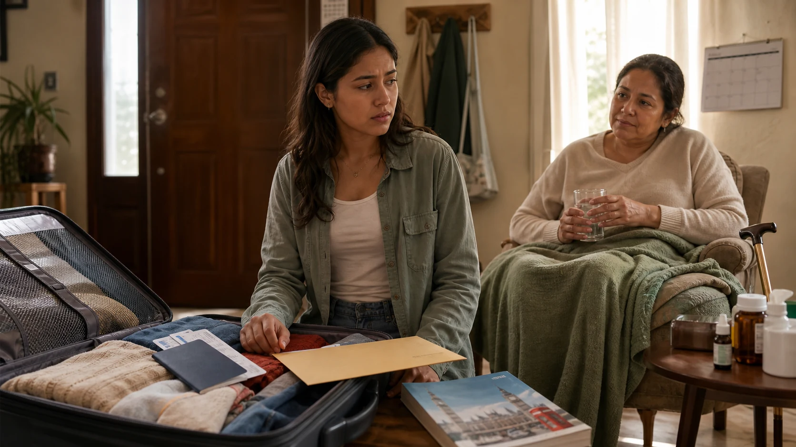

ObjectiveGive the character one clear recommendation.
Practice Lab · Unit 2 Group Speaking
Take a Side
Show one visual dilemma, assign two sides and give every student five minutes to prepare one clear piece of advice.
Open teacher console5 dilemmas availableChoose a situation by topic or title.
Language targetShould, could, might want to, If I were…, and suggest.
Spoken productOne piece of advice from every student.
Pre-taskShow and assignEveryone studies the image. The teacher assigns For or Against.
Pre-taskPrepare for 5:00Each student prepares one recommendation from their assigned side.
TaskHear every voiceInvite a volunteer, then call on students in order when needed.
Post-taskClose the roundConfirm that everyone advised, then open the next visual dilemma.
Complete interaction model
One question, two possible recommendations
The advice can be brief. Students do not need to explain a consequence.
Teacher: “What should Sofia do?”
Student · For: “If I were her, I would accept the scholarship.”
Teacher: “Who has the opposite advice?”
Student · Against: “She might want to ask the university for more time.”
Teacher console
Choose a visual dilemma
Changing the dilemma resets the preparation timer.

Dilemma 1 of 5
The Scholarship Decision
The dilemma
After the alarm
Open the conversation
Begin with a volunteer. If no one starts, invite students in order and use these questions whenever the exchange slows down.
Who would like to start?What should the character do?What is your advice?Who has the opposite advice?Do you agree with that advice?What would you advise instead?
Post-task checklist
Finish this round
These checks keep the discussion simple and make sure every student participates.